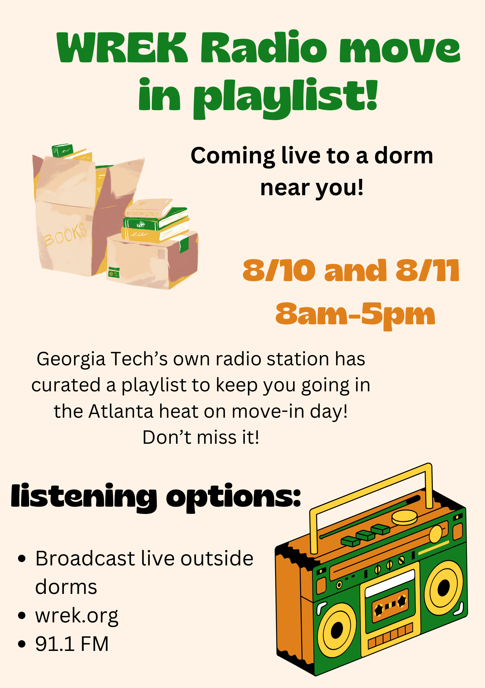
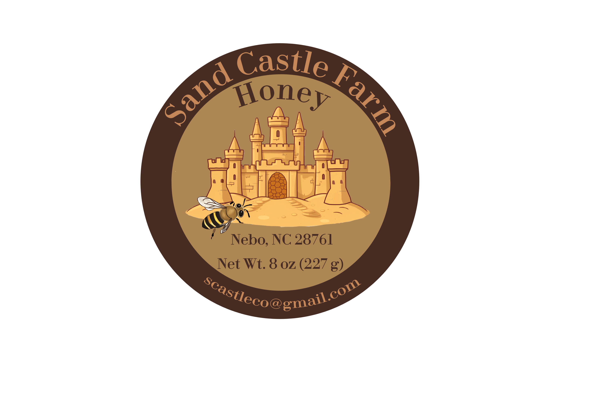
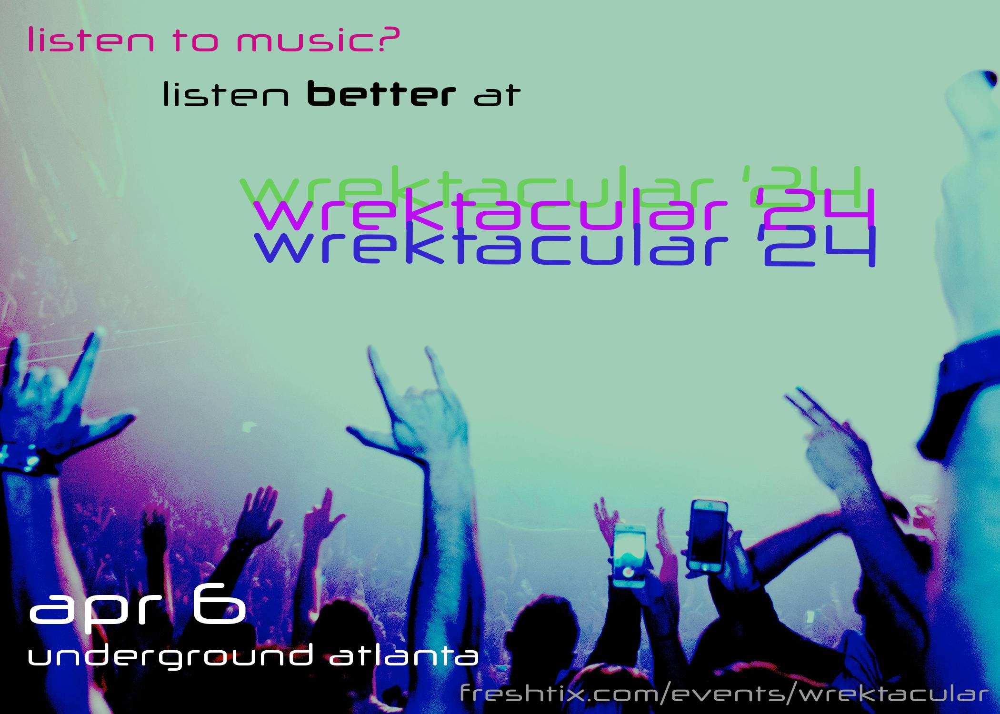
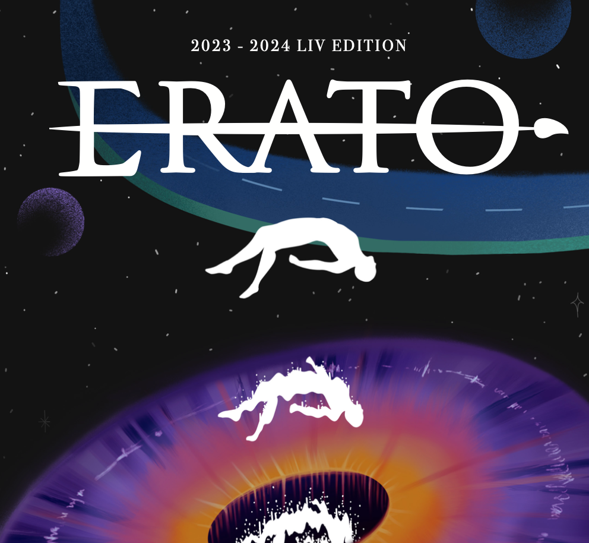
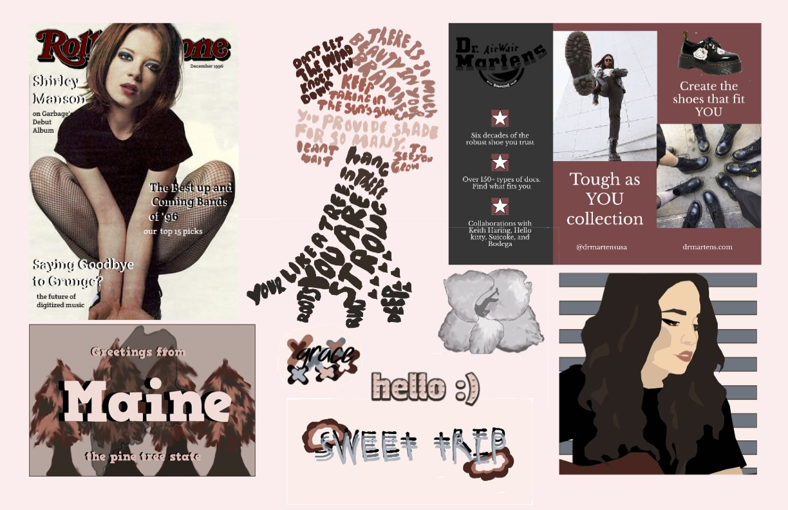
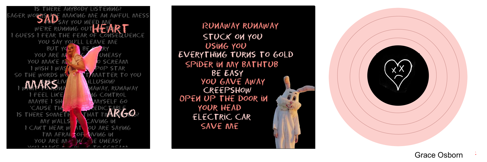
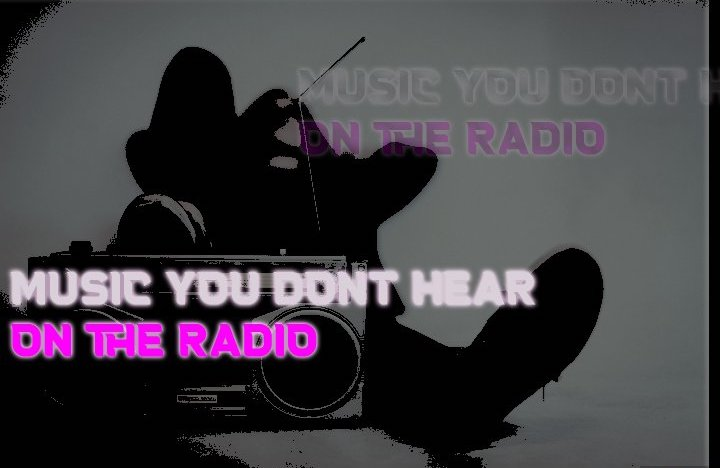
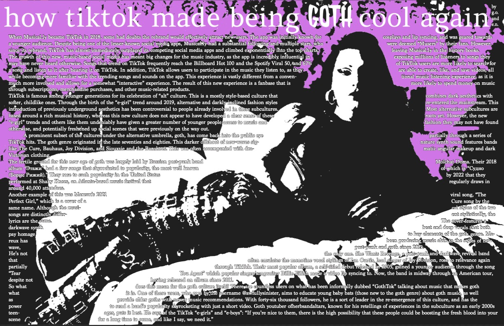

×
Wrek Move In Playlist Announcement
2024

×
Sand Castle Farm Honey Logo
Logo design for Sand Castle Farms jars of honey. 2024.

×
Listen Better
Promotional Poster for WREKTACULAR (Wrek Radio live music event). 2024.
×
WREKTACULAR Promotional Video
Promotional Video for WREKTACULAR (Wrek Radio live music event). 2024.

×
Parallels and Cycles: Erato 2024
Georgia Tech's 2024 literary magazine. Spreads I designed: 16 & 17, 40 & 41, 52 & 53

×
Graphic Design Final Portfolio
Graphic design final portfolio featuring projects I made throughout the semester. 2021.

×
Album Redesign
Album cover redesign class project. This is my rendidtion of Sad Heart by Mars Argo. 2021.

×
WREK Project
A Project for WREK Radio Design collective that features WREK's slogan "Music you don't hear on the radio." 2023.

×
WREK Zine Page
My page I made with a partner to go in WREK Design Collective's zine. 2022.